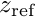
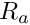
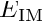
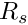
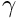
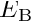
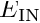
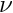
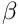

Read dry deposition parameters from a spec file.
- Parameters
-
| [in,out] | file | Spec file. |
| [in,out] | drydep_params | Dry deposition parameters. |
Dry deposition is simulatied using the specified parameters:
- z_ref (real, unit m): the reference height

used in the calculation of aerodynamic resistance 
- u_mean (real, unit m s^{-1}): the wind speed at the reference height
- z_rough (real, unit m): the roughness length associated with the surface
- A (real, unit m): the characteristic radius of collectors associated with the surface
- alpha (real, dimensionless): the parameter used in the calculation of impaction efficiency

- eps_0 (real, dimensionless): the empirical constant used in the calculation of surface resistance

- gamma (real, dimensionless): the exponent

used in the calculation of Brownian diffusion collection efficiency 
- C_B (real, dimensionless): the coefficient for Brownian diffusion collection efficiency
- C_IN (real, dimensionless): the coefficient for interception collection efficiency

- C_IM (real, dimensionless): the coefficient for impaction collection efficiency
- nu (real, dimensionless): the exponent

used in the calculation of interception collection efficiency
- beta (real, dimensionless): the exponent

used in the calculation of impaction collection efficiency
See also: